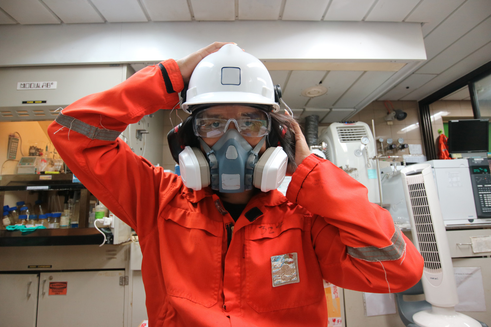

Ochrona dróg oddechowych
- Maski i półmaski
- Filtry
- Pochłaniacze
Bardzo ważną sprawą dla naszego życia jest właściwa ochrona dróg oddechowych, szczególnie w miejscu pracy, gdzie jesteśmy narażenia na różnego rodzaju pyły, dymy, substancje chemiczne w postaci gazów i oparów. Odpowiednio dobrane środki ochrony dróg oddechowych pozwolą na ochronę naszych pracowników w sytuacjach gdy stężenie niebezpiecznych substancji w powietrzu jest zbyt wysokie, występuje w powietrzu niedobór tlenu oraz gdy temperatura wydychanego powietrze przekracza dopuszczalne normy.